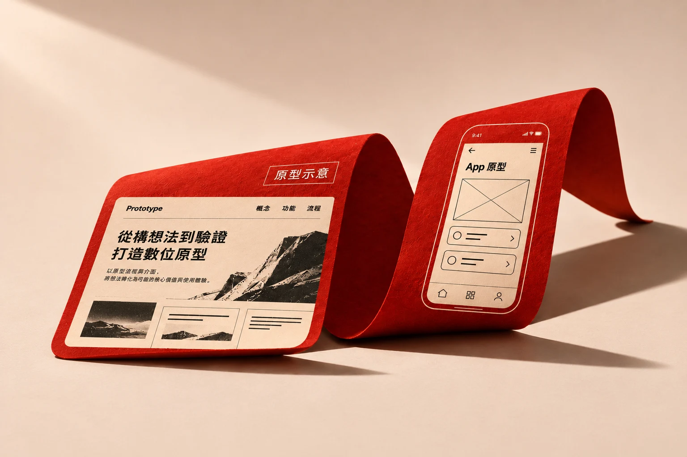

合作方向
AI Agent 與流程自動化
盤點資料與流程，找出可自動化的步驟，並保留人工確認點。
App 與網站原型
把核心功能做成可操作的原型，驗證使用流程與技術可行性。
技術研究與驗證
針對具體問題比較工具、模型與實作方式，記錄測試結果與限制。
怎麼開頭？
寄封信，簡單說說這三件事就好：
- 你現在想做什麼？
- 目前卡在哪裡？
- 希望一起先試哪一步？

盤點資料與流程，找出可自動化的步驟，並保留人工確認點。
把核心功能做成可操作的原型，驗證使用流程與技術可行性。
針對具體問題比較工具、模型與實作方式，記錄測試結果與限制。
寄封信，簡單說說這三件事就好：